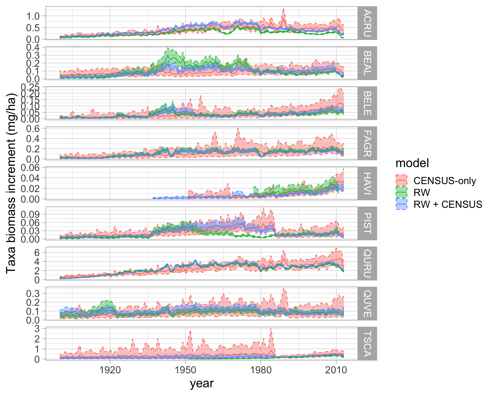
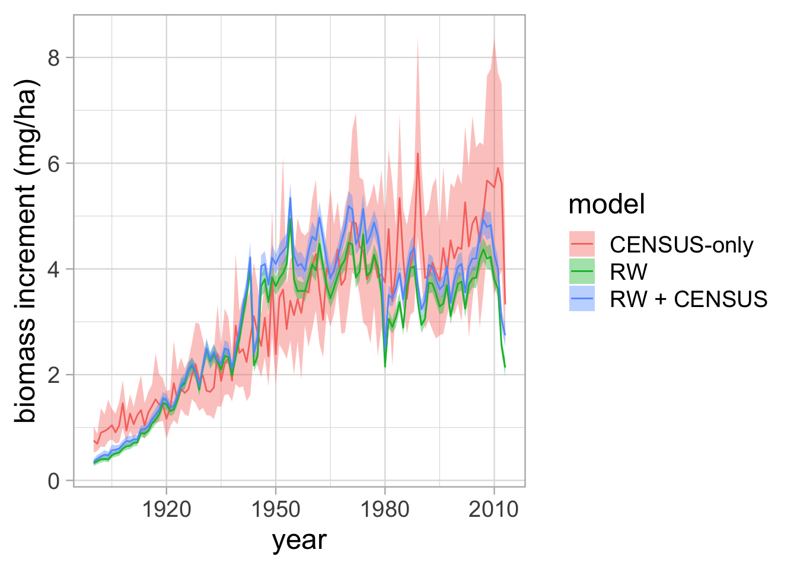

Code
library(rstan)
library(dplyr)
library(reshape2)
library(ggplot2)
library(grid)
library(gridExtra)
library(tidyr)library(rstan)
library(dplyr)
library(reshape2)
library(ggplot2)
library(grid)
library(gridExtra)
library(tidyr)nchains = 1
iter = 500
##############################################
## 1. Load data
##############################################
# load built dataset
dat = readRDS('data/tree_data_HARVARD.RDS')
model_post_CENSUS <- readRDS("output/model_post_CENSUS_HARVARD.RDS")
model_post_RW <- readRDS("output/model_post_RW_HARVARD.RDS")
model_post_RW_CENSUS <- readRDS("output/model_post_RW_CENSUS_HARVARD.RDS")
fnames = paste0(c('model_post_RW',
'model_post_CENSUS',
'model_post_RW_CENSUS'), '_', 'HARVARD.RDS')
models = c('RW', 'Census', 'RW + Census')
nmodels = length(fnames)
# we only need "D" for diameter and we only need the iterations that we are planning to keep
post_d = list()
post_rw = list()
post_bt = list()
post_sx = list()
post_sxobs = list()
post_sdobs = list()
for (i in 1:length(fnames)) {
fname_model = fnames[i]
out = readRDS(paste0('output/', fname_model))
# get all array slices for diameters
variables = names(out[1,1,])
allDs = grep('D\\[',variables)
allRWs = grep('X\\[',variables)
allBTs = grep('beta_t\\[',variables)
allSX = grep('sig_x\\[',variables)
allSXOBS = grep('sig_x_obs',variables)
# we need to put into matrix for use in processing, some compile info from all chains
out.temp.d = out[,,allDs]
out.temp.rw = out[,,allRWs]
out.temp.bt = out[,,allBTs]
out.temp.sx = out[,,allSX]
out.temp.sxobs = out[,,allSXOBS]
# out.temp.sdobs = out[seq(dim(out)[1]-pool+1, dim(out)[1], pool/(keep/nchains)),,allSDOBS]
# if(nchains>1){
# out = out.temp[,1,]
# out.rw = out.temp.rw[,1,]
# out.bt = out.temp.bt[,1,]
# out.sx = out.temp.sx[,1,]
#
# for (j in 2:ncol(out.temp)){
# out = rbind(out, out.temp[,j,])
# out.rw = rbind(out.rw, out.temp.rw[,j,])
# out.sx = rbind(out.rw, out.temp.sx[,j,])
# }
# post[[i]] = out
# post_rw[[i]] = out.rw
# } else {
post_d[[i]] = out.temp.d
post_rw[[i]] = out.temp.rw
post_bt[[i]] = out.temp.bt
post_sx[[i]] = out.temp.sx
post_sx[[i]] = out.temp.sx
post_sxobs[[i]] = out.temp.sxobs
# }
# if (models[i] == 'Census'){
# allSDOBS = grep('sig_d_obs',variables)
# out.temp.sdobs = out[,,allSDOBS]
# # if(nchains>1){
# # out.sdobs = out.temp.sdobs[,1,]
# # for (j in 2:ncol(out.temp.sdobs)){
# # out.sdobs = rbind(out.sdobs, out.temp.sdobs[,j,])
# # }
# # } else {
# out.sdobs = out.temp.sdobs
# # }
# post_sdobs_C = out.sdobs
# sigma_d_obs_C = median(post_sdobs_C)
# }
#
# if (models[i] == 'RW + Census'){
# allSDOBS = grep('sig_d_obs',variables)
# out.temp.sdobs = out[,,allSDOBS]
# if(nchains>1){
# out.sdobs = out.temp.sdobs[,1,]
# for (j in 2:ncol(out.temp.sdobs)){
# out.sdobs = rbind(out.sdobs, out.temp.sdobs[,j,])
# }
# } else {
# out.sdobs = out.temp.sdobs
# }
# post_sdobs_RWC = out.sdobs
# sigma_d_obs_RWC = median(post_sdobs_RWC)
# }
}
#
# # load built data for site
# dat = readRDS(file.path(site_dir,'runs',paste0(mvers,'_',dvers),'input',paste0('tree_data_', site ,'_STAN_',mvers,'_', dvers, '.RDS')))
N_years = dat$N_years
N_Tr = dat$N_Tr
N_taxa = dat$N_taxa
X2Tr = dat$X2Tr
X2year = dat$X2year
Tr = dat$Tr %>% arrange(stat_id)
taxon = Tr$taxon
plot = Tr$plot
years = dat$years
year_lo = min(years)
year_hi = max(years)
# sig_d_obs = dat$sig_d_obs
pdbh = exp(dat$logTr)
#
list2env(dat, envir = globalenv())<environment: R_GlobalEnv>N_C = dat$N_C
X2C = dat$X2C
X2year_C = dat$X2year_C
allTrees = dat$allTrees %>% arrange(stat_id)
taxon_C = allTrees$taxon
plot_C = allTrees$plot
distance = allTrees$distancetree <- 1
# pdf('figures/tree_growth_model_ALL.pdf', width=10, height=6)
# for (tree in 1:N_C){
print(tree)[1] 1 in.RW = tree %in% X2Tr
if (in.RW){
inds = which(X2Tr == tree)
yrinds = X2year[inds]
dbh_iter = t(post_d[[1]][,inds])
dbh_iter = data.frame(dbh_iter)
dbh_iter = data.frame(year=years[yrinds], dbh_iter)
dbh_mean = apply(dbh_iter[,2:ncol(dbh_iter)], 1, mean, na.rm=TRUE)
dbh_quant = t(apply(dbh_iter[,2:ncol(dbh_iter)], 1,
function(x) quantile(x, c(0.025, 0.5, 0.975), na.rm=TRUE)))
dbh_tree = data.frame(d_mean = dbh_mean,
d_median = dbh_quant[,2],
d_lo = dbh_quant[,1],
d_hi = dbh_quant[,3],
year = years[yrinds],
model = 'RW')
}
# determine which estimates correspond to this tree
inds_C = which(X2Tr_C == tree)
yrinds_C = X2year_C[inds_C]
# C
dbh_iter_C = t(post_d[[2]][,inds_C])
dbh_iter_C = data.frame(dbh_iter_C)
dbh_iter_C = data.frame(year=years[yrinds_C], dbh_iter_C)
dbh_mean_C = apply(dbh_iter_C[,2:ncol(dbh_iter_C)], 1, mean, na.rm=TRUE)
dbh_quant_C = t(apply(dbh_iter_C[,2:ncol(dbh_iter_C)], 1,
function(x) quantile(x, c(0.025, 0.5, 0.975), na.rm=TRUE)))
dbh_tree_C = data.frame(d_mean = dbh_mean_C,
d_median = dbh_quant_C[,2],
d_lo = dbh_quant_C[,1],
d_hi = dbh_quant_C[,3],
year = years[yrinds_C],
model = 'Census')
# RWC
dbh_iter_RWC = t(post_d[[3]][,inds_C])
dbh_iter_RWC = data.frame(dbh_iter_RWC)
dbh_iter_RWC = data.frame(year=years[yrinds_C], dbh_iter_RWC)
dbh_mean_RWC = apply(dbh_iter_RWC[,2:ncol(dbh_iter_RWC)], 1, mean, na.rm=TRUE)
dbh_quant_RWC = t(apply(dbh_iter_RWC[,2:ncol(dbh_iter_RWC)], 1,
function(x) quantile(x, c(0.025, 0.5, 0.975), na.rm=TRUE)))
dbh_tree_RWC = data.frame(d_mean = dbh_mean_RWC,
d_median = dbh_quant_RWC[,2],
d_lo = dbh_quant_RWC[,1],
d_hi = dbh_quant_RWC[,3],
year = years[yrinds_C],
model = 'RW + Census')
if (in.RW){
dbh_tree = rbind(dbh_tree,
dbh_tree_C,
dbh_tree_RWC)
} else {
dbh_tree = dbh_tree_C
}
idx_d_obs_C = which(Dobs$stat_id == tree)
dbh_obs_C = data.frame(d_obs = Dobs$dbh[idx_d_obs_C],
year = years[Dobs$year[idx_d_obs_C]])
stem_id = Dobs$ID[idx_d_obs_C][1]
if (in.RW){
idx_d_obs = which(Tr$stat_id == tree)
dbh_obs = data.frame(d_obs = Tr$dbh[idx_d_obs],
year = years[Tr$year[idx_d_obs]])
} else {
dbh_obs = data.frame(d_obs = numeric(0),
year = numeric(0))
}
# Create a text
grob = grobTree(textGrob(paste0('Tree ', tree, '; Stem ID ', stem_id, '; Species ', taxon[tree] ), x=0.05, y=0.9, hjust=0,
gp=gpar(col="black", fontsize=22)))
p1 = ggplot() +
geom_ribbon(data=dbh_tree, aes(x=year, ymin=d_lo, ymax=d_hi, fill=model), alpha=0.5) +
geom_line(data=dbh_tree, aes(x=year, y=d_median, colour=model)) +
geom_point(data=dbh_obs, aes(x=year, y=d_obs), size=2) +
geom_point(data=dbh_obs_C, aes(x=year, y=d_obs), size=2, shape=1) +
xlab('year') +
ylab('dbh (cm)') +
xlim(c(year_lo, year_hi)) +
theme_bw(16) +
annotation_custom(grob)
print(p1) if (in.RW){
inds = which(X2Tr == tree)
yrinds = X2year[inds]
rw_iter = t(post_rw[[1]][,inds])
rw_iter = data.frame(rw_iter)
rw_iter = data.frame(year=years[yrinds], rw_iter)
rw_mean = apply(rw_iter[,2:ncol(rw_iter)], 1, mean, na.rm=TRUE)
rw_quant = t(apply(rw_iter[,2:ncol(rw_iter)], 1,
function(x) quantile(x, c(0.025, 0.5, 0.975), na.rm=TRUE)))
rw_tree = data.frame(x_mean = rw_mean,
x_median = rw_quant[,2],
x_lo = rw_quant[,1],
x_hi = rw_quant[,3],
year = years[yrinds],
model = 'RW')
}
inds_C = which(X2Tr_C == tree)
yrinds_C = X2year_C[inds_C]
rw_iter_C = t(post_rw[[2]][,inds_C])
rw_iter_C = data.frame(rw_iter_C)
rw_iter_C = data.frame(year=years[yrinds_C], rw_iter_C)
rw_mean_C = apply(rw_iter_C[,2:ncol(rw_iter_C)], 1, mean, na.rm=TRUE)
rw_quant_C = t(apply(rw_iter_C[,2:ncol(rw_iter_C)], 1,
function(x) quantile(x, c(0.025, 0.5, 0.975), na.rm=TRUE)))
rw_tree_C = data.frame(x_mean = rw_mean_C,
x_median = rw_quant_C[,2],
x_lo = rw_quant_C[,1],
x_hi = rw_quant_C[,3],
year = years[yrinds_C],
model = 'Census')
rw_iter_RWC = t(post_rw[[3]][,inds_C])
rw_iter_RWC = data.frame(rw_iter_RWC)
rw_iter_RWC = data.frame(year=years[yrinds_C], rw_iter_RWC)
rw_mean_RWC = apply(rw_iter_RWC[,2:ncol(rw_iter_RWC)], 1, mean, na.rm=TRUE)
rw_quant_RWC = t(apply(rw_iter_RWC[,2:ncol(rw_iter_RWC)], 1,
function(x) quantile(x, c(0.025, 0.5, 0.975), na.rm=TRUE)))
rw_tree_RWC = data.frame(x_mean = rw_mean_RWC,
x_median = rw_quant_RWC[,2],
x_lo = rw_quant_RWC[,1],
x_hi = rw_quant_RWC[,3],
year = years[yrinds_C],
model = 'RW + Census')
if (in.RW){
rw_tree = rbind(rw_tree,
rw_tree_C,
rw_tree_RWC)
} else {
rw_tree = rw_tree_C
}
if (in.RW){
idx_rw_obs = which(Xobs$stat_id == tree)
rw_obs = data.frame(x_obs = Xobs$incr[idx_rw_obs],
year = years[Xobs$year[idx_rw_obs]])
} else {
rw_obs = data.frame(x_obs = numeric(0),
year = numeric(0))
}
# Create a text
grob <- grobTree(textGrob(paste0('Tree ', tree, '; Stem ID ', stem_id, '; Species ', taxon[tree] ), x=0.05, y=0.9, hjust=0,
gp=gpar(col="black", fontsize=22)))
p2 = ggplot() +
# geom_line(data=dbh_tree, aes(x=year, y=d_mean)) +
# geom_ribbon(data=rw_tree, aes(x=year, ymin=x_lo, ymax=x_hi), fill='lightgrey') +
geom_ribbon(data=rw_tree, aes(x=year, ymin=x_lo, ymax=x_hi, fill=model), alpha=0.5) +
geom_line(data=rw_tree, aes(x=year, y=x_median, colour=model)) +
geom_point(data=rw_obs, aes(x=year, y=x_obs), size=2, alpha=0.4) +
# geom_dog(data=rw_obs, aes(x=year, y=x_obs, dog='glasses'), size=2) +
# ylim(c(0,500)) +
xlab('year') +
ylab('rw (mm)') +
xlim(c(year_lo, year_hi)) +
theme_bw(16) #+
# ggtitle(paste0('Tree ', i)) +
# annotation_custom(grob)
# print(p2)
grid.arrange(p1, p2, nrow = 2)
#}abi_site_CENSUS <- readRDS( "summary/abi_site_summary_CENSUS.RDS")
agb_site_CENSUS <- readRDS("summary/agb_site_summary_CENSUS.RDS")
abi_taxon_CENSUS <- readRDS( "summary/abi_taxon_summary_CENSUS.RDS")
agb_taxon_CENSUS <- readRDS("summary/agb_taxon_summary_CENSUS.RDS")
abi_site_TR <- readRDS( "summary/abi_site_summary_TR.RDS")
agb_site_TR <- readRDS("summary/agb_site_summary_TR.RDS")
abi_taxon_TR <- readRDS( "summary/abi_taxon_summary_TR.RDS")
agb_taxon_TR <- readRDS("summary/agb_taxon_summary_TR.RDS")
abi_site_TR_CENSUS <- readRDS( "summary/abi_site_summary_TR_CENSUS.RDS")
agb_site_TR_CENSUS <- readRDS("summary/agb_site_summary_TR_CENSUS.RDS")
abi_taxon_TR_CENSUS <- readRDS( "summary/abi_taxon_summary_TR_CENSUS.RDS")
agb_taxon_TR_CENSUS <- readRDS("summary/agb_taxon_summary_TR_CENSUS.RDS")agb_site_summary <- rbind(agb_site_TR, agb_site_CENSUS, agb_site_TR_CENSUS)
abi_site_summary <- rbind(abi_site_TR, abi_site_CENSUS, abi_site_TR_CENSUS)
agb_taxon_summary <- rbind(agb_taxon_TR, agb_taxon_CENSUS, agb_taxon_TR_CENSUS)
abi_taxon_summary <- rbind(abi_taxon_TR, abi_taxon_CENSUS, abi_taxon_TR_CENSUS)ggplot(data = agb_taxon_summary)+
geom_ribbon(aes(x=year, ymin=AGB.lo, ymax=AGB.hi, colour=model, fill=model), alpha=0.4, linetype=2) +
geom_line(aes(x = year, y = AGB.mean, color = model))+
facet_grid(taxon~., scales='free_y') +
theme_light(18) +
ylab('Taxa Aboveground Biomass (mg/ha)')ggplot(data = abi_taxon_summary)+
geom_ribbon(aes(x=year, ymin=ABI.lo, ymax=ABI.hi, colour=model, fill=model), alpha=0.4, linetype=2) +
geom_line(aes(x = year, y = ABI.mean, color = model))+
facet_grid(taxon~., scales='free_y') +
theme_light(18) +
ylab('Taxa biomass increment (mg/ha)')
ggplot(data = agb_site_summary)+
geom_ribbon(aes(x=year, ymin=ab025, ymax=ab975, fill = model), alpha=0.4, linetype=2) +
geom_line(aes(x = year, y = abmean, color = model))+
#facet_grid(model~., scales='free_y') +
theme_light(18) +
ylab('biomass (mg/ha)')ggplot(data = abi_site_summary)+
geom_ribbon(aes(x=year, ymin=abi025, ymax=abi975, fill = model), alpha=0.4, linetype=2) +
geom_line(aes(x = year, y = abimean, color = model))+
#facet_grid(model~., scales='free_y') +
theme_light(18) +
ylab('biomass increment (mg/ha)')